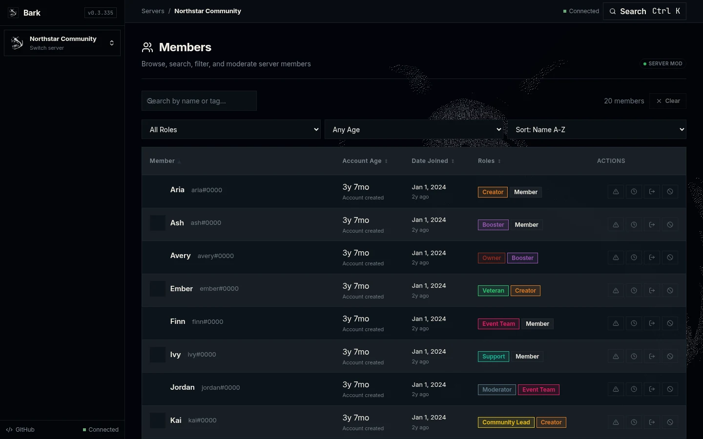
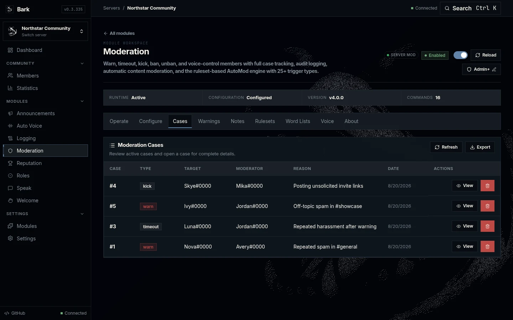
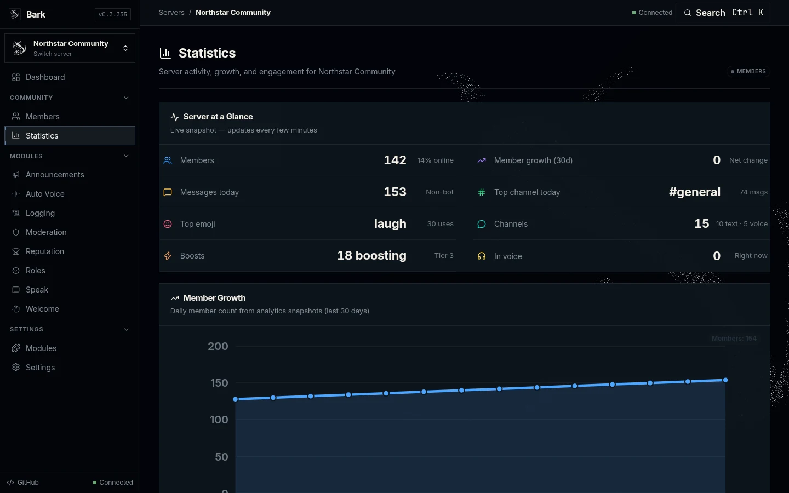
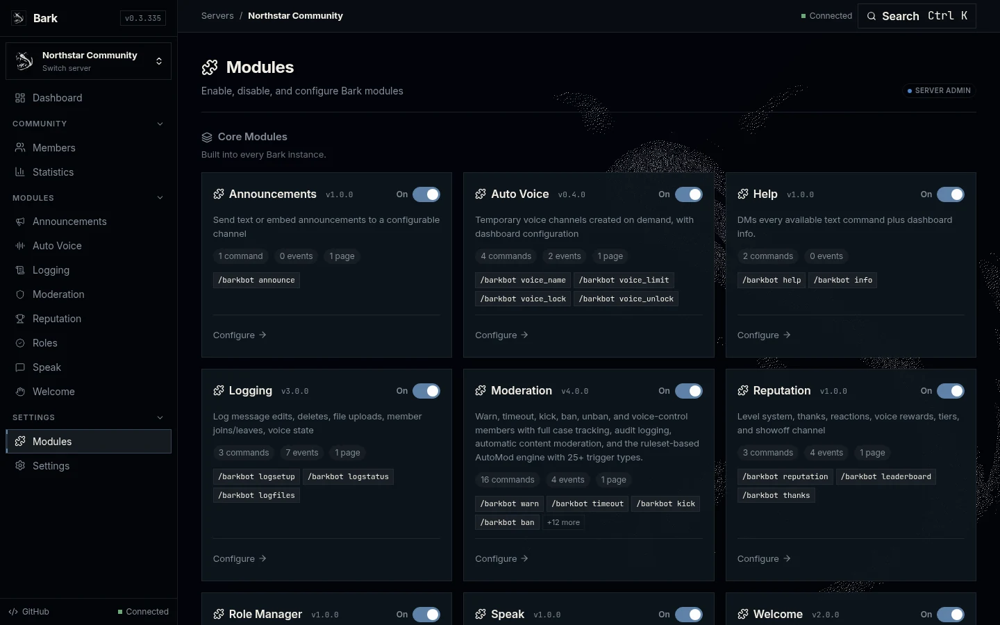

Bark pairs moderation, reputation, roles, automation, logging and community
administration into a single self-hosted Discord control panel — a Discord bot
and a browser dashboard running together in one process.
Bark is server management software. Each area below is a set of connected workflows that share one dashboard, one permission model and one server workspace.
Moderate
Warn, note, timeout, kick and ban with a persistent case history. Enforce rulesets and word lists, and act on voice channels directly from the dashboard.
Cases, warnings & private moderator notes
Timeouts, kicks, bans & unbans
Rulesets (AutoMod) & word lists
Voice kick / move / mute / deafen
Audit history for every action
Manage members
Search your member list, inspect each member's activity and moderation history, and perform administrative actions without switching tools.
Searchable member directory with filters
Per-member profile & moderation history
Review activity and reputation at a glance
Take action from the member view
Build reputation
Reward engagement across messages, reactions, emoji, voice time and thanks. Members climb a named tier ladder with rewards and leaderboards.
Message, reaction, emoji, voice & thanks scoring
14 named tiers with unlock rewards
Leaderboards & top-member widgets
Tunable weights and daily caps
Automate roles
Assign roles automatically based on how members join, how long they stay, voice presence, Twitch streaming status, and reaction claims.
Assign roles on join
Tenure-based roles over time
Voice-activity & Twitch-live roles
Reaction-claimed roles
Automate the server
Take care of the recurring work: announcements, welcome flows, temporary voice channels and event logging run on their own.
Scheduled announcements (text or embed)
Welcome & goodbye messages with embeds
On-demand temporary voice channels
Message, member & voice event logging
Operate from the web
Configure modules, review live activity and perform actions through the Bark dashboard — not a tangle of slash commands and bot settings.
One workspace per server
Live, in-browser activity updates
Configure modules without touching config files
Role-gated access to every page and action
Dashboard-first
One server. One workspace.
Sign in with Discord, pick a server you manage, and everything lives in one
consistent interface. No more configuring each bot from a separate command.
Server switching — move between the servers you manage from the sidebar.
Module workspaces — every module has the same Operate / Configure workspace.
Live updates — activity streams into the dashboard as it happens.
Activity summaries — see what's happening at a glance.
Role-gated access — Viewer → Moderator → Admin → Owner.
Server overview — health, member counts, activity and quick actions.

Member management — locate members and review their state.

Moderation — cases, warnings, notes, rulesets and voice.

Statistics — growth, activity and engagement, charted.

Modules — enable and configure every module per server.
Authorization
Viewerread-only access
Moderatorwarn, timeout, moderate
Adminconfigure modules & settings
Ownerfull instance control
Core modules
Everything Bark does, out of the box.
Nine core modules. Each is a workspace in the dashboard — enable it per server, configure it, and it just works.
🛡Moderationcore
Centralized moderation with persistent history and automatic content protection.
Cases and warnings with private notes
Timeouts, kicks, bans and unbans
Rulesets and word lists (AutoMod)
Voice moderation — kick, move, mute, deafen
Scam, account-age and anti-raid protection
Full audit history
🏆Reputationcore
Levels and reputation built from real engagement.
Message, emoji, reaction, voice and thanks scoring
Named tier ladder with rewards
Leaderboards and top-member widgets
Configurable weights and daily caps
🎭Role Managercore
Automatic role assignment based on real behavior.
Roles on join
Tenure-based roles
Voice-activity roles
Twitch-live roles
Reaction-claimed roles
📣Announcementscore
Send text or embed announcements to a configured channel.
Text or rich embed announcements
Configurable target channel
Default embed color
🔊Auto Voicecore
On-demand temporary voice channels, configured from the dashboard.
Create & manage temporary channels
Configurable naming and limits
Optional auto-join role
Owner rename / limit / lock controls
📜Loggingcore
Discord event logging to keep a record of your server.
Message edits and deletes
File uploads
Member joins and leaves
Voice state changes
👋Welcomecore
Member welcome and goodbye automation.
Welcome messages
Goodbye messages
Optional rich embeds
🗣Speakcore
Preset phrases triggered by /bark speak <key>.
Dashboard-configured phrase keys
Quick, repeatable responses
❓Helpcore
Command reference delivered right to members.
DMs every available slash command
Dashboard info included
Sign in to configure modules for a server you manage.
Extensible
Start with core. Add more when you need it.
Bark's plugin system lets you install single-file modules without editing the bot's
code or restarting the application. Plugins use the same BarkModule
contract as built-in modules, are enabled per server, and are off by default until
you turn them on.
🎲
Fun
/roll, /coinflip, /fact, /eightball
🔍
Info & Tools
/serverinfo, /userinfo, /ping
🎉
Birthdays
Set & list birthdays, announced on the day
🎁
Giveaway
React-to-enter with automatic winner drawing
🧠
Trivia
Multiplayer quiz with categories & leaderboards
🗳
Poll
Reaction-based polls
🪪
Profiles
Rendered member profile cards via Bark's media engine
🐕
Good Dog
Woofs at "bark" messages — opt-in per server
⬆
Install from the dashboard. Upload a .py file on the Modules page — no restart, no code edits. Owner-only.
Administration software, with a permissions model.
Bark is built for operators. Access is enforced on pages and APIs, not just hidden buttons.
Discord OAuth sign-in
Optional Discord OAuth2 login. With OAuth disabled, Bark runs public for trusted local networks.
Four role tiers
Viewer → Moderator → Admin → Owner gate every page and API action.
Per-server authorization
Manage access follows Discord permissions and roles the server owner configures.
Owner-controlled instance
Instance owner controls hosted access, backups and updates.
Why Bark
Replace the pile of disconnected control panels.
Many communities run one bot for moderation, another for levels, another for temporary
voice channels, another for roles — and configure each one with separate commands.
Bark treats the problem as server management software.
One dashboardOne permission modelOne server workspaceOne activity historyOne deploymentOne visual language
Run your Discord server from one control panel.
Self-host Bark, manage your community from the browser, and extend it with plugins when you're ready.